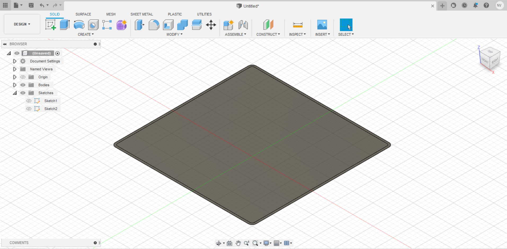
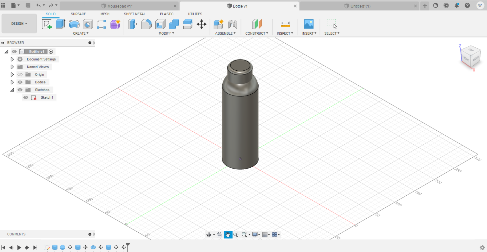
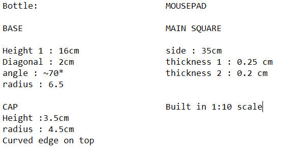

<p>For the 2 models I did the first 2 things I could see, my mousepad and bottle. A weird combination but nevertheless</p>
<p>The mousepad was a relatively easy project as it was 2 squares, 1 big and 1 small</p>

<p>The bottle was quite difficult as it felt very weird to position everything on a 3D plane, while making this bottle I discovered a new shape called 'torus' and it was quite fun to design this</p>

<p>The original bottle and mousepad are here</p>
<p>The measurements are here as well</p>

[GO BACK](./week_2.html)